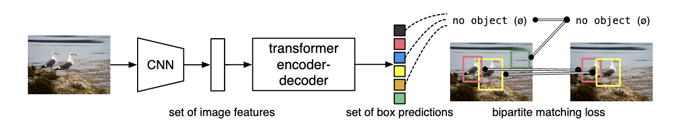

%%capture
!pip install datasets transformers timm wandb rich[jupyter]Training an object detection model using Hugging Face
Training a Detr object detection model using Hugging Face transformers and datasets
Training a Detr object detection model using Hugging Face transformers and datasets
The Hugging Face transformers library has increasingly expanded from its original focus on Natural Language Processing tasks to include more models covering a range of computer vision tasks. This blog post will look at how we can train an object detection model using the Hugging Face transformers and datasets libraries.
What is object detection?
Object detection is the task of predicting objects contained within an image.

Object detection can be helpful in several applications where you want to know not only whether a thing is in an image but where (and how many) of that thing there are. Various approaches have been developed over the years for this task, often relying on various complex hand-crafted features.
As with other areas of computer vision, there has been an increasing adoption of transformer-based solutions to this task. One model using transformers is the Detr architecture.
What is Detr?

Detr (DEtection TRansformer) is a model architecture introduced in the paper End-to-End Object Detection with Transformers. We won’t dig into the architecture in massive detail in this blog since we’re focused on the practical use of this model architecture in this post. One thing that is important to note here is that DETR still uses a CNN backbone. More recently, other models such as YOLOS use a transformer backbone too. Currently, however, these fully transformer-based approaches show some performance gap over more traditional techniques (because this is deep learning, ‘traditional’ refers to stuff from last year, of course).
Using Hugging Face for object detection
There are existing examples for using the Hugging Face transformers library and datasets with the Trainer class to do image classification. There are also example notebooks showing how to fine-tune a Detr model on custom data. However, I didn’t find examples that use the datasets library and the Trainer class to manage training. Training an object detection model using datasets and the transformers library is what this blog post covers.
Why the datasets library?
You may ask why it is helpful to provide an example of using the datasets library for training an object detection model, i.e. why not use PyTorch for the data loading, which already has many examples for training object detection models?
There are a few reasons why trying to use datasets for this can be helpful. A significant one for me is the close integration between the datasets library and the Hugging Face datasets hub. Loading a dataset from the hugging face hub often involves two lines of code (including the imports).
Quickly loading a dataset and then using the same library to prepare the dataset for training an object detection model removes some friction. This becomes especially helpful when you are iterating on the process of creating training data, training a model, and creating more training data. In this iterative process, the hub can be used for storing models and datasets at each stage. Having a clear provenance of these changes (without relying on additional tools) is also a benefit of this workflow. This is the kind of pipeline hugit is intended to support (in this case, for image classification models).
Scope of this blog post
At the moment, this is mainly intended to give a quick overview of the steps involved. It isn’t intended to be a proper tutorial. If I have time later, I may flesh this out (particularly if other projects I’m working on that use object detection progress further).
Enough talk, let’s get started. First we install required libraries.
I’m a big fan of the rich library so almost always have this extension loaded.
%load_ext richThe next couple of lines gets us authenticated with the Hugging Face hub.
!git config --global credential.helper storefrom huggingface_hub import notebook_loginnotebook_login()Login successful
Your token has been saved to /root/.huggingface/tokenWe’ll use Weights and Biases for tracking our model training.
import wandbwandb.login()%env WANDB_PROJECT=chapbooks
%env WANDB_ENTITY=davanstrienLoading the dataset
In this blog post will use a dataset being added to the Hugging Face datasets hub as part of the BigLAM hackathon. This dataset has a configuration for object detection and image classification, so we’ll need to specify which one we want. Since the dataset doesn’t define train/test/valid splits for us, we’ll grab the training split. I won’t provide a full description of the dataset in this blog post since the dataset is still in the process of being documented. The tl;dr summary is that the dataset includes images of digitized books with bounding boxes for illustrations.
from datasets import load_dataset
dataset = load_dataset(
"biglam/nls_chapbook_illustrations", "illustration-detection", split="train"
)Reusing dataset nls_chapbook_illustrations (/Users/dvanstrien/.cache/huggingface/datasets/biglam___nls_chapbook_illustrations/illustration-detection/1.0.0/75f355eb0ba564ef120939a78730eb187a4d3eb682e987ed1f682a5bea5466eb)Let’s take a look at one example from this dataset to get a sense of how the data looks
dataset[0]{ 'image_id': 4, 'image': <PIL.JpegImagePlugin.JpegImageFile image mode=RGB size=600x1080 at 0x7FDD6504FAD0>, 'width': 600, 'height': 1080, 'url': None, 'date_captured': '', 'objects': [ { 'category_id': 0, 'image_id': '4', 'id': 1, 'area': 110901, 'bbox': [34.529998779296875, 556.8300170898438, 401.44000244140625, 276.260009765625], 'segmentation': [ [ 34.529998779296875, 556.8300170898438, 435.9700012207031, 556.8300170898438, 435.9700012207031, 833.0900268554688, 34.529998779296875, 833.0900268554688 ] ], 'iscrowd': False } ] }
You will see we hav some metadata for the image, the image itself and the field objects contains the annotations themselves. Looking just at an example of the annotations:
# hide_output
{
"category_id": 0,
"image_id": "4",
"id": 1,
"area": 110901,
"bbox": [
34.529998779296875,
556.8300170898438,
401.44000244140625,
276.260009765625,
],
"segmentation": [
[
34.529998779296875,
556.8300170898438,
435.9700012207031,
556.8300170898438,
435.9700012207031,
833.0900268554688,
34.529998779296875,
833.0900268554688,
]
],
"iscrowd": False,
}{'category_id': 0,
'image_id': '4',
'id': 1,
'area': 110901,
'bbox': [34.529998779296875,
556.8300170898438,
401.44000244140625,
276.260009765625],
'segmentation': [[34.529998779296875,
556.8300170898438,
435.9700012207031,
556.8300170898438,
435.9700012207031,
833.0900268554688,
34.529998779296875,
833.0900268554688]],
'iscrowd': False}We see here, that we again have some metadata for each image. We also have a category_id and a bbox. Some of these fields should look familiar to you if you are familiar with the coco format. This will become relevant later, so don’t worry if these aren’t familiar to you.
One issue we can run into when training object detection models is stray bounding boxes (i.e. ones where the bounding boxes stretch beyond the edge of the image). We can check and remove these quite easily. This is some ugly code/there is probably a better way, but this is a quick check, so I’ll forgive myself.
from tqdm.auto import tqdmremove_idx = []
for idx, row in tqdm(enumerate(dataset)):
objects_ = row["objects"]
for ob in objects_:
bbox = ob["bbox"]
negative = [box for box in bbox if box < 0]
if negative:
remove_idx.append(idx)len(remove_idx)1
keep = [i for i in range(len(dataset)) if i not in remove_idx]
len(keep)7257
The above code has given us a list of indexes to keep so we use the select method to grab those.
dataset = dataset.select(keep)We also create a test split. If we were properly doing this we’d likely want to be a bit more thoughfull about how to do this split.
dataset = dataset.train_test_split(0.1)Preparing the data
This section of the blog post is the bit which focuses on getting data ready for an object detection model such as detr via the datasets library. This is, therefore, also the section which will differ most from the other examples showing how to train models using PyTorch data loaders.
The Feature Extractor
If you are familiar with Hugging Face for natural language tasks, you are probably familiar with using Tokenizer_for_blah_model when pre-processing text. Often if you are using a pre-trained model, you will use AutoTokenizer.from_pretrained, passing in the ID to the model you want to fine-tune. This tokenizer then ensures that the tokenization matches the approach used for the pre-trained model.
The Feature Extractor performs a similar task. Let’s look at this more closely. We’ll use a pre-trained model for this example and fine-tune it. I also include commented-out code, which shows how you could use the same process with any CNN backbone. This may be useful if you have particular requirements about what backbone to use or if you have a CNN backbone that is already fine-tuned on your domain.
model_checkpoint = "facebook/detr-resnet-50"from transformers import DetrFeatureExtractor
feature_extractor = DetrFeatureExtractor.from_pretrained(model_checkpoint)If you wanted to use a different CNN backbone as your starting point you would instead define a config.
# from transformers import DetrConfig
# from transformers import DetrFeatureExtractor
# feature_extractor = DetrFeatureExtractor()What does the feature extractor do?
To check what feature extractor does we can make use of the handy inspect function
from rich import inspect# collapse_show
inspect(feature_extractor, methods=True, dunder=True)╭─ DetrFeatureExtractor { "do_normalize": true, "do_resize": true, "feature_extractor_type": "DetrFeatureEx─╮ │ def (images: Union[PIL.Image.Image, numpy.ndarray, ForwardRef('torch.Tensor'), List[PIL.Image.Image], │ │ List[numpy.ndarray], List[ForwardRef('torch.Tensor')]], annotations: Union[List[Dict], List[List[Dict]]] = │ │ None, return_segmentation_masks: Union[bool, NoneType] = False, masks_path: Union[pathlib.Path, NoneType] = │ │ None, pad_and_return_pixel_mask: Union[bool, NoneType] = True, return_tensors: Union[str, │ │ transformers.utils.generic.TensorType, NoneType] = None, **kwargs) -> │ │ transformers.feature_extraction_utils.BatchFeature: │ │ │ │ Constructs a DETR feature extractor. │ │ │ │ _auto_class = None │ │ __dict__ = { │ │ '_processor_class': None, │ │ 'feature_extractor_type': 'DetrFeatureExtractor', │ │ 'format': 'coco_detection', │ │ 'do_resize': True, │ │ 'size': 800, │ │ 'max_size': 1333, │ │ 'do_normalize': True, │ │ 'image_mean': [0.485, 0.456, 0.406], │ │ 'image_std': [0.229, 0.224, 0.225] │ │ } │ │ do_normalize = True │ │ do_resize = True │ │ __doc__ = '\n Constructs a DETR feature extractor.\n\n This feature extractor inherits │ │ from [`FeatureExtractionMixin`] which contains most of the main methods. Users\n │ │ should refer to this superclass for more information regarding those │ │ methods.\n\n\n Args:\n format (`str`, *optional*, defaults to │ │ `"coco_detection"`):\n Data format of the annotations. One of │ │ "coco_detection" or "coco_panoptic".\n do_resize (`bool`, *optional*, │ │ defaults to `True`):\n Whether to resize the input to a certain │ │ `size`.\n size (`int`, *optional*, defaults to 800):\n Resize │ │ the input to the given size. Only has an effect if `do_resize` is set to `True`. │ │ If size is a\n sequence like `(width, height)`, output size will be │ │ matched to this. If size is an int, smaller edge of\n the image will be │ │ matched to this number. i.e, if `height > width`, then image will be rescaled to │ │ `(size *\n height / width, size)`.\n max_size (`int`, │ │ *optional*, defaults to `1333`):\n The largest size an image dimension │ │ can have (otherwise it\'s capped). Only has an effect if `do_resize` is\n │ │ set to `True`.\n do_normalize (`bool`, *optional*, defaults to `True`):\n │ │ Whether or not to normalize the input with mean and standard deviation.\n │ │ image_mean (`int`, *optional*, defaults to `[0.485, 0.456, 0.406]`):\n │ │ The sequence of means for each channel, to be used when normalizing images. │ │ Defaults to the ImageNet mean.\n image_std (`int`, *optional*, defaults to │ │ `[0.229, 0.224, 0.225]`):\n The sequence of standard deviations for │ │ each channel, to be used when normalizing images. Defaults to the\n │ │ ImageNet std.\n ' │ │ feature_extractor_type = 'DetrFeatureExtractor' │ │ format = 'coco_detection' │ │ image_mean = [0.485, 0.456, 0.406] │ │ image_std = [0.229, 0.224, 0.225] │ │ max_size = 1333 │ │ model_input_names = ['pixel_values', 'pixel_mask'] │ │ __module__ = 'transformers.models.detr.feature_extraction_detr' │ │ _processor_class = None │ │ size = 800 │ │ __weakref__ = None │ │ __call__ = def __call__(images: Union[PIL.Image.Image, numpy.ndarray, │ │ ForwardRef('torch.Tensor'), List[PIL.Image.Image], List[numpy.ndarray], │ │ List[ForwardRef('torch.Tensor')]], annotations: Union[List[Dict], │ │ List[List[Dict]]] = None, return_segmentation_masks: Union[bool, NoneType] = │ │ False, masks_path: Union[pathlib.Path, NoneType] = None, │ │ pad_and_return_pixel_mask: Union[bool, NoneType] = True, return_tensors: │ │ Union[str, transformers.utils.generic.TensorType, NoneType] = None, **kwargs) -> │ │ transformers.feature_extraction_utils.BatchFeature: │ │ Main method to prepare for the model one or several image(s) and optional │ │ annotations. Images are by default │ │ padded up to the largest image in a batch, and a pixel mask is created that │ │ indicates which pixels are │ │ real/which are padding. │ │ center_crop = def center_crop(image, size): │ │ Crops `image` to the given size using a center crop. Note that if the image is too │ │ small to be cropped to the │ │ size given, it will be padded (so the returned result has the size asked). │ │ __class__ = class __class__(format='coco_detection', do_resize=True, size=800, max_size=1333, │ │ do_normalize=True, image_mean=None, image_std=None, **kwargs): Constructs a DETR │ │ feature extractor. │ │ convert_coco_poly_to_mask = def convert_coco_poly_to_mask(segmentations, height, width): │ │ convert_rgb = def convert_rgb(image): Converts `PIL.Image.Image` to RGB format. │ │ _create_or_get_repo = def _create_or_get_repo(repo_path_or_name: Union[str, NoneType] = None, repo_url: │ │ Union[str, NoneType] = None, organization: Union[str, NoneType] = None, private: │ │ bool = None, use_auth_token: Union[bool, str, NoneType] = None) -> │ │ huggingface_hub.repository.Repository: │ │ __delattr__ = def __delattr__(name, /): Implement delattr(self, name). │ │ __dir__ = def __dir__(): Default dir() implementation. │ │ _ensure_format_supported = def _ensure_format_supported(image): │ │ __eq__ = def __eq__(value, /): Return self==value. │ │ expand_dims = def expand_dims(image): Expands 2-dimensional `image` to 3 dimensions. │ │ __format__ = def __format__(format_spec, /): Default object formatter. │ │ from_dict = def from_dict(feature_extractor_dict: Dict[str, Any], **kwargs) -> │ │ ForwardRef('SequenceFeatureExtractor'): │ │ Instantiates a type of [`~feature_extraction_utils.FeatureExtractionMixin`] from a │ │ Python dictionary of │ │ parameters. │ │ from_json_file = def from_json_file(json_file: Union[str, os.PathLike]) -> │ │ ForwardRef('SequenceFeatureExtractor'): │ │ Instantiates a feature extractor of type │ │ [`~feature_extraction_utils.FeatureExtractionMixin`] from the path to │ │ a JSON file of parameters. │ │ from_pretrained = def from_pretrained(pretrained_model_name_or_path: Union[str, os.PathLike], │ │ **kwargs) -> ForwardRef('SequenceFeatureExtractor'): │ │ Instantiate a type of [`~feature_extraction_utils.FeatureExtractionMixin`] from a │ │ feature extractor, *e.g.* a │ │ derived class of [`SequenceFeatureExtractor`]. │ │ __ge__ = def __ge__(value, /): Return self>=value. │ │ get_feature_extractor_dict = def get_feature_extractor_dict(pretrained_model_name_or_path: Union[str, │ │ os.PathLike], **kwargs) -> Tuple[Dict[str, Any], Dict[str, Any]]: │ │ From a `pretrained_model_name_or_path`, resolve to a dictionary of parameters, to │ │ be used for instantiating a │ │ feature extractor of type [`~feature_extraction_utils.FeatureExtractionMixin`] │ │ using `from_dict`. │ │ _get_repo_url_from_name = def _get_repo_url_from_name(repo_name: str, organization: Union[str, NoneType] = │ │ None, private: bool = None, use_auth_token: Union[bool, str, NoneType] = None) -> │ │ str: │ │ __getattribute__ = def __getattribute__(name, /): Return getattr(self, name). │ │ __gt__ = def __gt__(value, /): Return self>value. │ │ __hash__ = def __hash__(): Return hash(self). │ │ __init__ = def __init__(format='coco_detection', do_resize=True, size=800, max_size=1333, │ │ do_normalize=True, image_mean=None, image_std=None, **kwargs): Set elements of │ │ `kwargs` as attributes. │ │ __init_subclass__ = def __init_subclass__(...) This method is called when a class is subclassed. │ │ _is_valid_format = def _is_valid_format(format): │ │ __le__ = def __le__(value, /): Return self<=value. │ │ __lt__ = def __lt__(value, /): Return self<value. │ │ _max_by_axis = def _max_by_axis(the_list): │ │ __ne__ = def __ne__(value, /): Return self!=value. │ │ __new__ = def __new__(*args, **kwargs): Create and return a new object. See help(type) for │ │ accurate signature. │ │ _normalize = def _normalize(image, mean, std, target=None): Normalize the image with a certain │ │ mean and std. │ │ normalize = def normalize(image, mean, std): │ │ Normalizes `image` with `mean` and `std`. Note that this will trigger a conversion │ │ of `image` to a NumPy array │ │ if it's a PIL Image. │ │ pad_and_create_pixel_mask = def pad_and_create_pixel_mask(pixel_values_list: List[ForwardRef('torch.Tensor')], │ │ return_tensors: Union[str, transformers.utils.generic.TensorType, NoneType] = │ │ None): Pad images up to the largest image in a batch and create a corresponding │ │ `pixel_mask`. │ │ post_process = def post_process(outputs, target_sizes): │ │ Converts the output of [`DetrForObjectDetection`] into the format expected by the │ │ COCO api. Only supports │ │ PyTorch. │ │ post_process_instance = def post_process_instance(results, outputs, orig_target_sizes, max_target_sizes, │ │ threshold=0.5): │ │ Converts the output of [`DetrForSegmentation`] into actual instance segmentation │ │ predictions. Only supports │ │ PyTorch. │ │ post_process_panoptic = def post_process_panoptic(outputs, processed_sizes, target_sizes=None, │ │ is_thing_map=None, threshold=0.85): Converts the output of [`DetrForSegmentation`] │ │ into actual panoptic predictions. Only supports PyTorch. │ │ post_process_segmentation = def post_process_segmentation(outputs, target_sizes, threshold=0.9, │ │ mask_threshold=0.5): Converts the output of [`DetrForSegmentation`] into image │ │ segmentation predictions. Only supports PyTorch. │ │ prepare = def prepare(image, target, return_segmentation_masks=False, masks_path=None): │ │ prepare_coco_detection = def prepare_coco_detection(image, target, return_segmentation_masks=False): │ │ Convert the target in COCO format into the format expected by DETR. │ │ prepare_coco_panoptic = def prepare_coco_panoptic(image, target, masks_path, return_masks=True): │ │ _push_to_hub = def _push_to_hub(repo: huggingface_hub.repository.Repository, commit_message: │ │ Union[str, NoneType] = None) -> str: │ │ push_to_hub = def push_to_hub(repo_path_or_name: Union[str, NoneType] = None, repo_url: │ │ Union[str, NoneType] = None, use_temp_dir: bool = False, commit_message: │ │ Union[str, NoneType] = None, organization: Union[str, NoneType] = None, private: │ │ Union[bool, NoneType] = None, use_auth_token: Union[bool, str, NoneType] = None, │ │ **model_card_kwargs) -> str: │ │ Upload the feature extractor file to the 🤗 Model Hub while synchronizing a local │ │ clone of the repo in │ │ `repo_path_or_name`. │ │ __reduce__ = def __reduce__(): Helper for pickle. │ │ __reduce_ex__ = def __reduce_ex__(protocol, /): Helper for pickle. │ │ register_for_auto_class = def register_for_auto_class(auto_class='AutoFeatureExtractor'): │ │ Register this class with a given auto class. This should only be used for custom │ │ feature extractors as the ones │ │ in the library are already mapped with `AutoFeatureExtractor`. │ │ __repr__ = def __repr__(): Return repr(self). │ │ _resize = def _resize(image, size, target=None, max_size=None): │ │ Resize the image to the given size. Size can be min_size (scalar) or (w, h) tuple. │ │ If size is an int, smaller │ │ edge of the image will be matched to this number. │ │ resize = def resize(image, size, resample=2, default_to_square=True, max_size=None): │ │ Resizes `image`. Enforces conversion of input to PIL.Image. │ │ save_pretrained = def save_pretrained(save_directory: Union[str, os.PathLike], push_to_hub: bool = │ │ False, **kwargs): │ │ Save a feature_extractor object to the directory `save_directory`, so that it can │ │ be re-loaded using the │ │ [`~feature_extraction_utils.FeatureExtractionMixin.from_pretrained`] class method. │ │ _set_processor_class = def _set_processor_class(processor_class: str): Sets processor class as an │ │ attribute. │ │ __setattr__ = def __setattr__(name, value, /): Implement setattr(self, name, value). │ │ __sizeof__ = def __sizeof__(): Size of object in memory, in bytes. │ │ __str__ = def __str__(): Return str(self). │ │ __subclasshook__ = def __subclasshook__(...) Abstract classes can override this to customize │ │ issubclass(). │ │ to_dict = def to_dict() -> Dict[str, Any]: Serializes this instance to a Python dictionary. │ │ to_json_file = def to_json_file(json_file_path: Union[str, os.PathLike]): Save this instance to a │ │ JSON file. │ │ to_json_string = def to_json_string() -> str: Serializes this instance to a JSON string. │ │ to_numpy_array = def to_numpy_array(image, rescale=None, channel_first=True): │ │ Converts `image` to a numpy array. Optionally rescales it and puts the channel │ │ dimension as the first │ │ dimension. │ │ to_pil_image = def to_pil_image(image, rescale=None): │ │ Converts `image` to a PIL Image. Optionally rescales it and puts the channel │ │ dimension back as the last axis if │ │ needed. │ ╰─────────────────────────────────────────────────────────────────────────────────────────────────────────────────╯
The output of inspect can be pretty verbose, but I often find this a handy tool for quickly trying to work out a new library of API.
We’ll look at the most critical parts in more detail, but I’ll point out a few things; you’ll see some attributes that will probably sound familiar.
image_mean = [0.485, 0.456, 0.406]
image_std = [0.229, 0.224, 0.225] These are the mean and standard deviation used during the model training. It’s essential when we’re doing inference or fine-tuning to replicate these, and having these all stored inside a feature_extractor means we don’t have to go poking around in papers to try and work out what these values should be.
Another thing to point out is the push_to_hub method. We can store feature_extractors in the hub just as we can store models and tokenizers. Having to track the appropriate pre-processing steps for an image manually is super annoying to do manually. Storing this as we do other model components is much simpler and helps avoid errors resulting from tracing these things by hand.
The __call__ method for the DetrFeatureExtractor is what we’ll use to prepare our images before we pass them into the model, let’s dig more closely into this.
inspect(
feature_extractor.__call__,
)╭─ <bound method DetrFeatureExtractor.__call__ of DetrFeatureExtractor { "do_normalize": true, "do_resize": t─╮ │ def DetrFeatureExtractor.__call__(images: Union[PIL.Image.Image, numpy.ndarray, ForwardRef('torch.Tensor'), │ │ List[PIL.Image.Image], List[numpy.ndarray], List[ForwardRef('torch.Tensor')]], annotations: Union[List[Dict], │ │ List[List[Dict]]] = None, return_segmentation_masks: Union[bool, NoneType] = False, masks_path: │ │ Union[pathlib.Path, NoneType] = None, pad_and_return_pixel_mask: Union[bool, NoneType] = True, return_tensors: │ │ Union[str, transformers.utils.generic.TensorType, NoneType] = None, **kwargs) -> │ │ transformers.feature_extraction_utils.BatchFeature: │ │ │ │ Main method to prepare for the model one or several image(s) and optional annotations. Images are by default │ │ padded up to the largest image in a batch, and a pixel mask is created that indicates which pixels are │ │ real/which are padding. │ │ │ │ 27 attribute(s) not shown. Run inspect(inspect) for options. │ ╰─────────────────────────────────────────────────────────────────────────────────────────────────────────────────╯
Understanding what the __call__ method expected, and how to make sure that is what’s delivered by the datasets library is the key thing I needed to work out. What does it expect:
images: this can be a list or a single image (and stored in different formats)annotationsthis should be of typeUnion[List[Dict],││ List[List[Dict]]].
The images part is not too tricky to understand. We can either pass in a single image, a NumPy array representing an image or a list of images or NumPy arrays.
The annotations part is where Python type annotations don’t always do us many favours since we only know we’re expecting a list of dictionaries, but we can safely assume those dictionaries probably need to have a particular format. We can try and see what happens if we pass in an image and a list of a random dictionary.
import io
import requests
from PIL import Imageim = Image.open(
io.BytesIO(
requests.get(
"https://hips.hearstapps.com/hmg-prod.s3.amazonaws.com/images/cute-cat-photos-1593441022.jpg?crop=1.00xw:0.749xh;0,0.154xh&resize=980:*"
).content
)
)
im
labels = [
{
"bbox": [
0.0,
3,
3,
4,
]
}
]feature_extractor(im, labels)--------------------------------------------------------------------------- ValueError Traceback (most recent call last) Input In [23], in <cell line: 1>() ----> 1 feature_extractor(im, labels) File /usr/local/Caskroom/miniforge/base/envs/blog/lib/python3.9/site-packages/transformers/models/detr/feature_extraction_detr.py:524, in DetrFeatureExtractor.__call__(self, images, annotations, return_segmentation_masks, masks_path, pad_and_return_pixel_mask, return_tensors, **kwargs) 521 valid_annotations = True 523 if not valid_annotations: --> 524 raise ValueError( 525 """ 526 Annotations must of type `Dict` (single image) or `List[Dict]` (batch of images). In case of object 527 detection, each dictionary should contain the keys 'image_id' and 'annotations', with the latter 528 being a list of annotations in COCO format. In case of panoptic segmentation, each dictionary 529 should contain the keys 'file_name', 'image_id' and 'segments_info', with the latter being a list 530 of annotations in COCO format. 531 """ 532 ) 534 # Check that masks_path has a valid type 535 if masks_path is not None: ValueError: Annotations must of type `Dict` (single image) or `List[Dict]` (batch of images). In case of object detection, each dictionary should contain the keys 'image_id' and 'annotations', with the latter being a list of annotations in COCO format. In case of panoptic segmentation, each dictionary should contain the keys 'file_name', 'image_id' and 'segments_info', with the latter being a list of annotations in COCO format.
We can see that this raises a ValueError. We also get some more information here that gives us a clue where we went wrong. Specifically we can see that the annotations for a single image should be a Dict or List[Dict] if we’re using a batch of images. We also see that we should pass in this data in the COCO format. Since our data is already in this format we should be able to pass in an example.
image = dataset["train"][0]["image"]
imageannotations = dataset["train"][0]["objects"]
annotations[ { 'category_id': 0, 'image_id': '8081', 'id': 646, 'area': 114552, 'bbox': [81.0, 408.0, 387.0, 296.0], 'segmentation': [[81.0, 408.0, 468.0, 408.0, 468.0, 704.0, 81.0, 704.0]], 'iscrowd': False } ]
feature_extractor(images=image, annotations=annotations, return_tensors="pt")╭─────────────────────────────── Traceback (most recent call last) ────────────────────────────────╮ │ /var/folders/tj/54sfzlyj6_573fn82y996grc0000gr/T/ipykernel_47936/1569761185.py:1 in <cell line: │ │ 1> │ │ │ │ [Errno 2] No such file or directory: │ │ '/var/folders/tj/54sfzlyj6_573fn82y996grc0000gr/T/ipykernel_47936/1569761185.py' │ │ │ │ /usr/local/Caskroom/miniforge/base/envs/blog/lib/python3.9/site-packages/transformers/models/det │ │ r/feature_extraction_detr.py:524 in __call__ │ │ │ │ 521 │ │ │ │ │ │ │ │ valid_annotations = True │ │ 522 │ │ │ │ │ 523 │ │ │ if not valid_annotations: │ │ ❱ 524 │ │ │ │ raise ValueError( │ │ 525 │ │ │ │ │ """ │ │ 526 │ │ │ │ │ Annotations must of type `Dict` (single image) or `List[Dict]` (batc │ │ 527 │ │ │ │ │ detection, each dictionary should contain the keys 'image_id' and 'a │ ╰──────────────────────────────────────────────────────────────────────────────────────────────────╯ ValueError: Annotations must of type `Dict` (single image) or `List[Dict]` (batch of images). In case of object detection, each dictionary should contain the keys 'image_id' and 'annotations', with the latter being a list of annotations in COCO format. In case of panoptic segmentation, each dictionary should contain the keys 'file_name', 'image_id' and 'segments_info', with the latter being a list of annotations in COCO format.
Oh no! It still doesn’t work. At this point, it’s we probably either want to dig into the source code to work out what we should be passing to the feature_extractor. The relevant function is def prepare_coco_detection.
We also have another tutorial to consult. In this tutorial we see that the annotations are stored in a dictionary target with the keys image_id and annotations.
target = {'image_id': image_id, 'annotations': target}
encoding = self.feature_extractor(images=img, annotations=target, return_tensors="pt")With a bit more wrangling let’s see if this works.
target = {"image_id": 4, "annotations": annotations}feature_extractor(images=image, annotations=target, return_tensors="pt"){ 'pixel_values': tensor([[[[-0.7650, -0.9705, -0.9705, ..., -1.4158, -1.3815, -1.3815], [-0.7822, -0.9020, -0.9020, ..., -1.3815, -1.3644, -1.4500], [-0.8164, -0.9020, -0.9192, ..., -1.3815, -1.3815, -1.4500], ..., [ 1.5297, 1.5639, 1.5810, ..., 1.4612, 1.4612, 1.4783], [ 1.5125, 1.5297, 1.5468, ..., 1.4783, 1.4783, 1.4954], [ 1.4954, 1.5125, 1.5125, ..., 1.5125, 1.5125, 1.5297]], [[-0.6527, -0.8627, -0.8627, ..., -1.3179, -1.2829, -1.2829], [-0.7052, -0.8102, -0.8277, ..., -1.3004, -1.2829, -1.3704], [-0.7402, -0.8102, -0.8277, ..., -1.3529, -1.3529, -1.4405], ..., [ 1.5357, 1.5707, 1.5882, ..., 1.3957, 1.3957, 1.4132], [ 1.5182, 1.5357, 1.5532, ..., 1.4132, 1.4132, 1.4307], [ 1.5007, 1.5182, 1.5182, ..., 1.4482, 1.4482, 1.4657]], [[-0.4275, -0.6367, -0.6367, ..., -1.1073, -1.0898, -1.0898], [-0.4624, -0.5670, -0.5844, ..., -1.1247, -1.1247, -1.2119], [-0.5147, -0.6018, -0.6193, ..., -1.2293, -1.2467, -1.3339], ..., [ 1.4548, 1.4897, 1.5071, ..., 1.3154, 1.3154, 1.3328], [ 1.4374, 1.4548, 1.4722, ..., 1.3328, 1.3328, 1.3502], [ 1.4200, 1.4374, 1.4374, ..., 1.3677, 1.3677, 1.3851]]]]), 'pixel_mask': tensor([[[1, 1, 1, ..., 1, 1, 1], [1, 1, 1, ..., 1, 1, 1], [1, 1, 1, ..., 1, 1, 1], ..., [1, 1, 1, ..., 1, 1, 1], [1, 1, 1, ..., 1, 1, 1], [1, 1, 1, ..., 1, 1, 1]]]), 'labels': [ { 'boxes': tensor([[0.4575, 0.5120, 0.6450, 0.2726]]), 'class_labels': tensor([0]), 'image_id': tensor([4]), 'area': tensor([172346.9688]), 'iscrowd': tensor([0]), 'orig_size': tensor([1086, 600]), 'size': tensor([1332, 736]) } ] }
This is looking more like it! Now we have one example working we can translate this to a function that can prepare a batch into the same format.
Since we get a batch at a time we might need to refactor things slightly. In this example I’ve just grabbed the relevant lists for the images, image_id and annotations. We then use a list compression to store these in the dictionary format expected by the feature_extractor.
def transform(example_batch):
images = example_batch["image"]
ids_ = example_batch["image_id"]
objects = example_batch["objects"]
targets = [
{"image_id": id_, "annotations": object_} for id_, object_ in zip(ids_, objects)
]
return feature_extractor(images=images, annotations=targets, return_tensors="pt")We could apply this to our data using map but it often makes more sense to applay these on the fly using the with_transform method.
dataset["train"] = dataset["train"].with_transform(transform)Let’s take a look at an example
dataset["train"][0]{ 'pixel_values': tensor([[[-0.7650, -0.9705, -0.9705, ..., -1.4158, -1.3815, -1.3815], [-0.7822, -0.9020, -0.9020, ..., -1.3815, -1.3644, -1.4500], [-0.8164, -0.9020, -0.9192, ..., -1.3815, -1.3815, -1.4500], ..., [ 1.5297, 1.5639, 1.5810, ..., 1.4612, 1.4612, 1.4783], [ 1.5125, 1.5297, 1.5468, ..., 1.4783, 1.4783, 1.4954], [ 1.4954, 1.5125, 1.5125, ..., 1.5125, 1.5125, 1.5297]], [[-0.6527, -0.8627, -0.8627, ..., -1.3179, -1.2829, -1.2829], [-0.7052, -0.8102, -0.8277, ..., -1.3004, -1.2829, -1.3704], [-0.7402, -0.8102, -0.8277, ..., -1.3529, -1.3529, -1.4405], ..., [ 1.5357, 1.5707, 1.5882, ..., 1.3957, 1.3957, 1.4132], [ 1.5182, 1.5357, 1.5532, ..., 1.4132, 1.4132, 1.4307], [ 1.5007, 1.5182, 1.5182, ..., 1.4482, 1.4482, 1.4657]], [[-0.4275, -0.6367, -0.6367, ..., -1.1073, -1.0898, -1.0898], [-0.4624, -0.5670, -0.5844, ..., -1.1247, -1.1247, -1.2119], [-0.5147, -0.6018, -0.6193, ..., -1.2293, -1.2467, -1.3339], ..., [ 1.4548, 1.4897, 1.5071, ..., 1.3154, 1.3154, 1.3328], [ 1.4374, 1.4548, 1.4722, ..., 1.3328, 1.3328, 1.3502], [ 1.4200, 1.4374, 1.4374, ..., 1.3677, 1.3677, 1.3851]]]), 'pixel_mask': tensor([[1, 1, 1, ..., 1, 1, 1], [1, 1, 1, ..., 1, 1, 1], [1, 1, 1, ..., 1, 1, 1], ..., [1, 1, 1, ..., 1, 1, 1], [1, 1, 1, ..., 1, 1, 1], [1, 1, 1, ..., 1, 1, 1]]), 'labels': { 'boxes': tensor([[0.4575, 0.5120, 0.6450, 0.2726]]), 'class_labels': tensor([0]), 'image_id': tensor([8081]), 'area': tensor([172346.9688]), 'iscrowd': tensor([0]), 'orig_size': tensor([1086, 600]), 'size': tensor([1332, 736]) } }
The next thing we need to take care of is a collate function. ‘Data collators are objects that will form a batch by using a list of dataset elements as input. These elements are of the same type as the elements of train_dataset or eval_dataset.’ source.
def collate_fn(batch):
pixel_values = [item["pixel_values"] for item in batch]
encoding = feature_extractor.pad_and_create_pixel_mask(
pixel_values, return_tensors="pt"
)
labels = [item["labels"] for item in batch]
batch = {} # collated batch
batch['pixel_values'] = encoding['pixel_values']
batch["pixel_mask"] = encoding["pixel_mask"]
batch["labels"] = labels
return batchCreating a detr model
Avoiding ambiguous labels
We’re almost at the point where we can start training the model. We just do a little bit of housekeeping to make sure our model knows what our encoded labels are. It’s super annoying when you are trying a model out on the Hugging Face Hub and you get back labels, 0 or 3 with no clue what these labels refer to. We can avoid this by telling our model what labels we have. This mapping will then be bundled with the model when we push it to the hub.
id2label = dict(enumerate(dataset["train"].features["objects"][0]["category_id"].names))
label2id = {v: k for k, v in id2label.items()}
label2id{'early_printed_illustration': 0}
Now we can create the DetrForObjectDetection model. This should all look familiar if you’ve used transformers for other tasks.
from transformers import DetrForObjectDetection
model = DetrForObjectDetection.from_pretrained(
model_checkpoint,
num_labels=1,
id2label=id2label,
label2id=label2id,
ignore_mismatched_sizes=True,
)Downloading: "https://github.com/rwightman/pytorch-image-models/releases/download/v0.1-rsb-weights/resnet50_a1_0-14fe96d1.pth" to /root/.cache/torch/hub/checkpoints/resnet50_a1_0-14fe96d1.pth
Some weights of DetrForObjectDetection were not initialized from the model checkpoint at facebook/detr-resnet-50 and are newly initialized because the shapes did not match:
- class_labels_classifier.weight: found shape torch.Size([92, 256]) in the checkpoint and torch.Size([2, 256]) in the model instantiated
- class_labels_classifier.bias: found shape torch.Size([92]) in the checkpoint and torch.Size([2]) in the model instantiated
You should probably TRAIN this model on a down-stream task to be able to use it for predictions and inference.If you wanted to use another backbone you could do something like:
# from transformers import DetrForObjectDetection
# config = DetrConfig(backbone='regnetz_e8',id2label=id2label, label2id=label2id)
# model = DetrForObjectDetection(config)Training the detr model
We now specify our TrainingArguments
from transformers import TrainingArguments
training_args = TrainingArguments(
output_dir="detr-resnet-50_fine_tuned_nls_chapbooks",
per_device_train_batch_size=8,
num_train_epochs=10,
fp16=False,
save_steps=200,
logging_steps=50,
learning_rate=1e-4,
save_total_limit=2,
remove_unused_columns=False,
push_to_hub=True,
hub_model_id="davanstrien/detr-resnet-50_fine_tuned_nls_chapbooks",
)and create our Trainer
from transformers import Trainer
trainer = Trainer(
model=model,
args=training_args,
data_collator=collate_fn,
train_dataset=dataset["train"],
tokenizer=feature_extractor,
)Cloning https://huggingface.co/davanstrien/detr-resnet-50_fine_tuned_nls_chapbooks into local empty directory.#collapse
trainer.train()/usr/local/lib/python3.7/dist-packages/transformers/optimization.py:310: FutureWarning: This implementation of AdamW is deprecated and will be removed in a future version. Use the PyTorch implementation torch.optim.AdamW instead, or set `no_deprecation_warning=True` to disable this warning
FutureWarning,
***** Running training *****
Num examples = 6531
Num Epochs = 10
Instantaneous batch size per device = 8
Total train batch size (w. parallel, distributed & accumulation) = 8
Gradient Accumulation steps = 1
Total optimization steps = 8170
Automatic Weights & Biases logging enabled, to disable set os.environ["WANDB_DISABLED"] = "true"
Changes to your `wandb` environment variables will be ignored because your `wandb` session has already started. For more information on how to modify your settings with `wandb.init()` arguments, please refer to the W&B docs.
wandb: Currently logged in as: davanstrien (flyswot). Use `wandb login --relogin` to force relogin
Tracking run with wandb version 0.12.21
Run data is saved locally in
/content/wandb/run-20220724_144321-sgzdksxm
[8170/8170 5:15:38, Epoch 10/10]
| Step | Training Loss |
|---|---|
| 50 | 1.975700 |
| 100 | 3.254000 |
| 150 | 1.563300 |
| 200 | 1.103100 |
| 250 | 1.468000 |
| 300 | 1.169700 |
| 350 | 1.326600 |
| 400 | 1.413800 |
| 450 | 1.101600 |
| 500 | 1.054500 |
| 550 | 0.946000 |
| 600 | 0.871600 |
| 650 | 0.723600 |
| 700 | 0.866800 |
| 750 | 0.740400 |
| 800 | 0.753300 |
| 850 | 0.748900 |
| 900 | 0.919600 |
| 950 | 0.805800 |
| 1000 | 0.902200 |
| 1050 | 0.788800 |
| 1100 | 0.734400 |
| 1150 | 0.635700 |
| 1200 | 0.769000 |
| 1250 | 0.673000 |
| 1300 | 0.766200 |
| 1350 | 0.664800 |
| 1400 | 0.653700 |
| 1450 | 0.589500 |
| 1500 | 0.580900 |
| 1550 | 0.583200 |
| 1600 | 0.736000 |
| 1650 | 0.594900 |
| 1700 | 0.701400 |
| 1750 | 0.600300 |
| 1800 | 0.470900 |
| 1850 | 0.522800 |
| 1900 | 0.590300 |
| 1950 | 0.566300 |
| 2000 | 0.586800 |
| 2050 | 0.623800 |
| 2100 | 0.523400 |
| 2150 | 0.562500 |
| 2200 | 0.604100 |
| 2250 | 0.518000 |
| 2300 | 0.525100 |
| 2350 | 0.499100 |
| 2400 | 0.564900 |
| 2450 | 0.455100 |
| 2500 | 0.465000 |
| 2550 | 0.533200 |
| 2600 | 0.512500 |
| 2650 | 0.465100 |
| 2700 | 0.521800 |
| 2750 | 0.519500 |
| 2800 | 0.456800 |
| 2850 | 0.444400 |
| 2900 | 0.429600 |
| 2950 | 0.445400 |
| 3000 | 0.425600 |
| 3050 | 0.439600 |
| 3100 | 0.468000 |
| 3150 | 0.426500 |
| 3200 | 0.433500 |
| 3250 | 0.479400 |
| 3300 | 0.421800 |
| 3350 | 0.449500 |
| 3400 | 0.399300 |
| 3450 | 0.424500 |
| 3500 | 0.447700 |
| 3550 | 0.428900 |
| 3600 | 0.403800 |
| 3650 | 0.448300 |
| 3700 | 0.424300 |
| 3750 | 0.396600 |
| 3800 | 0.405900 |
| 3850 | 0.436300 |
| 3900 | 0.371500 |
| 3950 | 0.412300 |
| 4000 | 0.389200 |
| 4050 | 0.391900 |
| 4100 | 0.403200 |
| 4150 | 0.386800 |
| 4200 | 0.382500 |
| 4250 | 0.402000 |
| 4300 | 0.374400 |
| 4350 | 0.355900 |
| 4400 | 0.390800 |
| 4450 | 0.402600 |
| 4500 | 0.397100 |
| 4550 | 0.399700 |
| 4600 | 0.363900 |
| 4650 | 0.373600 |
| 4700 | 0.391600 |
| 4750 | 0.339200 |
| 4800 | 0.351900 |
| 4850 | 0.381800 |
| 4900 | 0.381800 |
| 4950 | 0.326000 |
| 5000 | 0.388300 |
| 5050 | 0.359100 |
| 5100 | 0.380500 |
| 5150 | 0.357100 |
| 5200 | 0.389500 |
| 5250 | 0.386200 |
| 5300 | 0.373000 |
| 5350 | 0.340000 |
| 5400 | 0.337100 |
| 5450 | 0.357500 |
| 5500 | 0.338900 |
| 5550 | 0.334500 |
| 5600 | 0.362000 |
| 5650 | 0.426100 |
| 5700 | 0.329500 |
| 5750 | 0.321500 |
| 5800 | 0.328800 |
| 5850 | 0.322400 |
| 5900 | 0.385900 |
| 5950 | 0.373800 |
| 6000 | 0.326000 |
| 6050 | 0.335200 |
| 6100 | 0.341600 |
| 6150 | 0.309600 |
| 6200 | 0.295700 |
| 6250 | 0.338600 |
| 6300 | 0.326800 |
| 6350 | 0.305600 |
| 6400 | 0.287200 |
| 6450 | 0.307700 |
| 6500 | 0.297000 |
| 6550 | 0.296700 |
| 6600 | 0.292700 |
| 6650 | 0.305300 |
| 6700 | 0.289300 |
| 6750 | 0.290600 |
| 6800 | 0.277100 |
| 6850 | 0.296500 |
| 6900 | 0.291800 |
| 6950 | 0.285800 |
| 7000 | 0.291400 |
| 7050 | 0.282500 |
| 7100 | 0.271500 |
| 7150 | 0.278300 |
| 7200 | 0.272100 |
| 7250 | 0.273800 |
| 7300 | 0.313500 |
| 7350 | 0.288600 |
| 7400 | 0.258700 |
| 7450 | 0.275700 |
| 7500 | 0.248200 |
| 7550 | 0.280800 |
| 7600 | 0.268500 |
| 7650 | 0.258700 |
| 7700 | 0.302800 |
| 7750 | 0.288700 |
| 7800 | 0.278400 |
| 7850 | 0.260700 |
| 7900 | 0.271200 |
| 7950 | 0.247900 |
| 8000 | 0.234700 |
| 8050 | 0.263900 |
| 8100 | 0.251900 |
| 8150 | 0.246900 |
Saving model checkpoint to detr-resnet-50_fine_tuned_nls_chapbooks/checkpoint-200
Configuration saved in detr-resnet-50_fine_tuned_nls_chapbooks/checkpoint-200/config.json
Model weights saved in detr-resnet-50_fine_tuned_nls_chapbooks/checkpoint-200/pytorch_model.bin
Feature extractor saved in detr-resnet-50_fine_tuned_nls_chapbooks/checkpoint-200/preprocessor_config.json
Feature extractor saved in detr-resnet-50_fine_tuned_nls_chapbooks/preprocessor_config.json
Saving model checkpoint to detr-resnet-50_fine_tuned_nls_chapbooks/checkpoint-400
Configuration saved in detr-resnet-50_fine_tuned_nls_chapbooks/checkpoint-400/config.json
Model weights saved in detr-resnet-50_fine_tuned_nls_chapbooks/checkpoint-400/pytorch_model.bin
Feature extractor saved in detr-resnet-50_fine_tuned_nls_chapbooks/checkpoint-400/preprocessor_config.json
Saving model checkpoint to detr-resnet-50_fine_tuned_nls_chapbooks/checkpoint-600
Configuration saved in detr-resnet-50_fine_tuned_nls_chapbooks/checkpoint-600/config.json
Model weights saved in detr-resnet-50_fine_tuned_nls_chapbooks/checkpoint-600/pytorch_model.bin
Feature extractor saved in detr-resnet-50_fine_tuned_nls_chapbooks/checkpoint-600/preprocessor_config.json
Deleting older checkpoint [detr-resnet-50_fine_tuned_nls_chapbooks/checkpoint-200] due to args.save_total_limit
Saving model checkpoint to detr-resnet-50_fine_tuned_nls_chapbooks/checkpoint-800
Configuration saved in detr-resnet-50_fine_tuned_nls_chapbooks/checkpoint-800/config.json
Model weights saved in detr-resnet-50_fine_tuned_nls_chapbooks/checkpoint-800/pytorch_model.bin
Feature extractor saved in detr-resnet-50_fine_tuned_nls_chapbooks/checkpoint-800/preprocessor_config.json
Deleting older checkpoint [detr-resnet-50_fine_tuned_nls_chapbooks/checkpoint-400] due to args.save_total_limit
Saving model checkpoint to detr-resnet-50_fine_tuned_nls_chapbooks/checkpoint-1000
Configuration saved in detr-resnet-50_fine_tuned_nls_chapbooks/checkpoint-1000/config.json
Model weights saved in detr-resnet-50_fine_tuned_nls_chapbooks/checkpoint-1000/pytorch_model.bin
Feature extractor saved in detr-resnet-50_fine_tuned_nls_chapbooks/checkpoint-1000/preprocessor_config.json
Deleting older checkpoint [detr-resnet-50_fine_tuned_nls_chapbooks/checkpoint-600] due to args.save_total_limit
Saving model checkpoint to detr-resnet-50_fine_tuned_nls_chapbooks/checkpoint-1200
Configuration saved in detr-resnet-50_fine_tuned_nls_chapbooks/checkpoint-1200/config.json
Model weights saved in detr-resnet-50_fine_tuned_nls_chapbooks/checkpoint-1200/pytorch_model.bin
Feature extractor saved in detr-resnet-50_fine_tuned_nls_chapbooks/checkpoint-1200/preprocessor_config.json
Deleting older checkpoint [detr-resnet-50_fine_tuned_nls_chapbooks/checkpoint-800] due to args.save_total_limit
Saving model checkpoint to detr-resnet-50_fine_tuned_nls_chapbooks/checkpoint-1400
Configuration saved in detr-resnet-50_fine_tuned_nls_chapbooks/checkpoint-1400/config.json
Model weights saved in detr-resnet-50_fine_tuned_nls_chapbooks/checkpoint-1400/pytorch_model.bin
Feature extractor saved in detr-resnet-50_fine_tuned_nls_chapbooks/checkpoint-1400/preprocessor_config.json
Deleting older checkpoint [detr-resnet-50_fine_tuned_nls_chapbooks/checkpoint-1000] due to args.save_total_limit
Saving model checkpoint to detr-resnet-50_fine_tuned_nls_chapbooks/checkpoint-1600
Configuration saved in detr-resnet-50_fine_tuned_nls_chapbooks/checkpoint-1600/config.json
Model weights saved in detr-resnet-50_fine_tuned_nls_chapbooks/checkpoint-1600/pytorch_model.bin
Feature extractor saved in detr-resnet-50_fine_tuned_nls_chapbooks/checkpoint-1600/preprocessor_config.json
Deleting older checkpoint [detr-resnet-50_fine_tuned_nls_chapbooks/checkpoint-1200] due to args.save_total_limit
Saving model checkpoint to detr-resnet-50_fine_tuned_nls_chapbooks/checkpoint-1800
Configuration saved in detr-resnet-50_fine_tuned_nls_chapbooks/checkpoint-1800/config.json
Model weights saved in detr-resnet-50_fine_tuned_nls_chapbooks/checkpoint-1800/pytorch_model.bin
Feature extractor saved in detr-resnet-50_fine_tuned_nls_chapbooks/checkpoint-1800/preprocessor_config.json
Deleting older checkpoint [detr-resnet-50_fine_tuned_nls_chapbooks/checkpoint-1400] due to args.save_total_limit
Saving model checkpoint to detr-resnet-50_fine_tuned_nls_chapbooks/checkpoint-2000
Configuration saved in detr-resnet-50_fine_tuned_nls_chapbooks/checkpoint-2000/config.json
Model weights saved in detr-resnet-50_fine_tuned_nls_chapbooks/checkpoint-2000/pytorch_model.bin
Feature extractor saved in detr-resnet-50_fine_tuned_nls_chapbooks/checkpoint-2000/preprocessor_config.json
Deleting older checkpoint [detr-resnet-50_fine_tuned_nls_chapbooks/checkpoint-1600] due to args.save_total_limit
Saving model checkpoint to detr-resnet-50_fine_tuned_nls_chapbooks/checkpoint-2200
Configuration saved in detr-resnet-50_fine_tuned_nls_chapbooks/checkpoint-2200/config.json
Model weights saved in detr-resnet-50_fine_tuned_nls_chapbooks/checkpoint-2200/pytorch_model.bin
Feature extractor saved in detr-resnet-50_fine_tuned_nls_chapbooks/checkpoint-2200/preprocessor_config.json
Deleting older checkpoint [detr-resnet-50_fine_tuned_nls_chapbooks/checkpoint-1800] due to args.save_total_limit
Saving model checkpoint to detr-resnet-50_fine_tuned_nls_chapbooks/checkpoint-2400
Configuration saved in detr-resnet-50_fine_tuned_nls_chapbooks/checkpoint-2400/config.json
Model weights saved in detr-resnet-50_fine_tuned_nls_chapbooks/checkpoint-2400/pytorch_model.bin
Feature extractor saved in detr-resnet-50_fine_tuned_nls_chapbooks/checkpoint-2400/preprocessor_config.json
Deleting older checkpoint [detr-resnet-50_fine_tuned_nls_chapbooks/checkpoint-2000] due to args.save_total_limit
Saving model checkpoint to detr-resnet-50_fine_tuned_nls_chapbooks/checkpoint-2600
Configuration saved in detr-resnet-50_fine_tuned_nls_chapbooks/checkpoint-2600/config.json
Model weights saved in detr-resnet-50_fine_tuned_nls_chapbooks/checkpoint-2600/pytorch_model.bin
Feature extractor saved in detr-resnet-50_fine_tuned_nls_chapbooks/checkpoint-2600/preprocessor_config.json
Deleting older checkpoint [detr-resnet-50_fine_tuned_nls_chapbooks/checkpoint-2200] due to args.save_total_limit
Saving model checkpoint to detr-resnet-50_fine_tuned_nls_chapbooks/checkpoint-2800
Configuration saved in detr-resnet-50_fine_tuned_nls_chapbooks/checkpoint-2800/config.json
Model weights saved in detr-resnet-50_fine_tuned_nls_chapbooks/checkpoint-2800/pytorch_model.bin
Feature extractor saved in detr-resnet-50_fine_tuned_nls_chapbooks/checkpoint-2800/preprocessor_config.json
Deleting older checkpoint [detr-resnet-50_fine_tuned_nls_chapbooks/checkpoint-2400] due to args.save_total_limit
Saving model checkpoint to detr-resnet-50_fine_tuned_nls_chapbooks/checkpoint-3000
Configuration saved in detr-resnet-50_fine_tuned_nls_chapbooks/checkpoint-3000/config.json
Model weights saved in detr-resnet-50_fine_tuned_nls_chapbooks/checkpoint-3000/pytorch_model.bin
Feature extractor saved in detr-resnet-50_fine_tuned_nls_chapbooks/checkpoint-3000/preprocessor_config.json
Deleting older checkpoint [detr-resnet-50_fine_tuned_nls_chapbooks/checkpoint-2600] due to args.save_total_limit
Saving model checkpoint to detr-resnet-50_fine_tuned_nls_chapbooks/checkpoint-3200
Configuration saved in detr-resnet-50_fine_tuned_nls_chapbooks/checkpoint-3200/config.json
Model weights saved in detr-resnet-50_fine_tuned_nls_chapbooks/checkpoint-3200/pytorch_model.bin
Feature extractor saved in detr-resnet-50_fine_tuned_nls_chapbooks/checkpoint-3200/preprocessor_config.json
Deleting older checkpoint [detr-resnet-50_fine_tuned_nls_chapbooks/checkpoint-2800] due to args.save_total_limit
Saving model checkpoint to detr-resnet-50_fine_tuned_nls_chapbooks/checkpoint-3400
Configuration saved in detr-resnet-50_fine_tuned_nls_chapbooks/checkpoint-3400/config.json
Model weights saved in detr-resnet-50_fine_tuned_nls_chapbooks/checkpoint-3400/pytorch_model.bin
Feature extractor saved in detr-resnet-50_fine_tuned_nls_chapbooks/checkpoint-3400/preprocessor_config.json
Deleting older checkpoint [detr-resnet-50_fine_tuned_nls_chapbooks/checkpoint-3000] due to args.save_total_limit
Saving model checkpoint to detr-resnet-50_fine_tuned_nls_chapbooks/checkpoint-3600
Configuration saved in detr-resnet-50_fine_tuned_nls_chapbooks/checkpoint-3600/config.json
Model weights saved in detr-resnet-50_fine_tuned_nls_chapbooks/checkpoint-3600/pytorch_model.bin
Feature extractor saved in detr-resnet-50_fine_tuned_nls_chapbooks/checkpoint-3600/preprocessor_config.json
Deleting older checkpoint [detr-resnet-50_fine_tuned_nls_chapbooks/checkpoint-3200] due to args.save_total_limit
Saving model checkpoint to detr-resnet-50_fine_tuned_nls_chapbooks/checkpoint-3800
Configuration saved in detr-resnet-50_fine_tuned_nls_chapbooks/checkpoint-3800/config.json
Model weights saved in detr-resnet-50_fine_tuned_nls_chapbooks/checkpoint-3800/pytorch_model.bin
Feature extractor saved in detr-resnet-50_fine_tuned_nls_chapbooks/checkpoint-3800/preprocessor_config.json
Deleting older checkpoint [detr-resnet-50_fine_tuned_nls_chapbooks/checkpoint-3400] due to args.save_total_limit
Saving model checkpoint to detr-resnet-50_fine_tuned_nls_chapbooks/checkpoint-4000
Configuration saved in detr-resnet-50_fine_tuned_nls_chapbooks/checkpoint-4000/config.json
Model weights saved in detr-resnet-50_fine_tuned_nls_chapbooks/checkpoint-4000/pytorch_model.bin
Feature extractor saved in detr-resnet-50_fine_tuned_nls_chapbooks/checkpoint-4000/preprocessor_config.json
Deleting older checkpoint [detr-resnet-50_fine_tuned_nls_chapbooks/checkpoint-3600] due to args.save_total_limit
Saving model checkpoint to detr-resnet-50_fine_tuned_nls_chapbooks/checkpoint-4200
Configuration saved in detr-resnet-50_fine_tuned_nls_chapbooks/checkpoint-4200/config.json
Model weights saved in detr-resnet-50_fine_tuned_nls_chapbooks/checkpoint-4200/pytorch_model.bin
Feature extractor saved in detr-resnet-50_fine_tuned_nls_chapbooks/checkpoint-4200/preprocessor_config.json
Deleting older checkpoint [detr-resnet-50_fine_tuned_nls_chapbooks/checkpoint-3800] due to args.save_total_limit
Saving model checkpoint to detr-resnet-50_fine_tuned_nls_chapbooks/checkpoint-4400
Configuration saved in detr-resnet-50_fine_tuned_nls_chapbooks/checkpoint-4400/config.json
Model weights saved in detr-resnet-50_fine_tuned_nls_chapbooks/checkpoint-4400/pytorch_model.bin
Feature extractor saved in detr-resnet-50_fine_tuned_nls_chapbooks/checkpoint-4400/preprocessor_config.json
Deleting older checkpoint [detr-resnet-50_fine_tuned_nls_chapbooks/checkpoint-4000] due to args.save_total_limit
Saving model checkpoint to detr-resnet-50_fine_tuned_nls_chapbooks/checkpoint-4600
Configuration saved in detr-resnet-50_fine_tuned_nls_chapbooks/checkpoint-4600/config.json
Model weights saved in detr-resnet-50_fine_tuned_nls_chapbooks/checkpoint-4600/pytorch_model.bin
Feature extractor saved in detr-resnet-50_fine_tuned_nls_chapbooks/checkpoint-4600/preprocessor_config.json
Deleting older checkpoint [detr-resnet-50_fine_tuned_nls_chapbooks/checkpoint-4200] due to args.save_total_limit
Saving model checkpoint to detr-resnet-50_fine_tuned_nls_chapbooks/checkpoint-4800
Configuration saved in detr-resnet-50_fine_tuned_nls_chapbooks/checkpoint-4800/config.json
Model weights saved in detr-resnet-50_fine_tuned_nls_chapbooks/checkpoint-4800/pytorch_model.bin
Feature extractor saved in detr-resnet-50_fine_tuned_nls_chapbooks/checkpoint-4800/preprocessor_config.json
Deleting older checkpoint [detr-resnet-50_fine_tuned_nls_chapbooks/checkpoint-4400] due to args.save_total_limit
Saving model checkpoint to detr-resnet-50_fine_tuned_nls_chapbooks/checkpoint-5000
Configuration saved in detr-resnet-50_fine_tuned_nls_chapbooks/checkpoint-5000/config.json
Model weights saved in detr-resnet-50_fine_tuned_nls_chapbooks/checkpoint-5000/pytorch_model.bin
Feature extractor saved in detr-resnet-50_fine_tuned_nls_chapbooks/checkpoint-5000/preprocessor_config.json
Deleting older checkpoint [detr-resnet-50_fine_tuned_nls_chapbooks/checkpoint-4600] due to args.save_total_limit
Saving model checkpoint to detr-resnet-50_fine_tuned_nls_chapbooks/checkpoint-5200
Configuration saved in detr-resnet-50_fine_tuned_nls_chapbooks/checkpoint-5200/config.json
Model weights saved in detr-resnet-50_fine_tuned_nls_chapbooks/checkpoint-5200/pytorch_model.bin
Feature extractor saved in detr-resnet-50_fine_tuned_nls_chapbooks/checkpoint-5200/preprocessor_config.json
Deleting older checkpoint [detr-resnet-50_fine_tuned_nls_chapbooks/checkpoint-4800] due to args.save_total_limit
Saving model checkpoint to detr-resnet-50_fine_tuned_nls_chapbooks/checkpoint-5400
Configuration saved in detr-resnet-50_fine_tuned_nls_chapbooks/checkpoint-5400/config.json
Model weights saved in detr-resnet-50_fine_tuned_nls_chapbooks/checkpoint-5400/pytorch_model.bin
Feature extractor saved in detr-resnet-50_fine_tuned_nls_chapbooks/checkpoint-5400/preprocessor_config.json
Deleting older checkpoint [detr-resnet-50_fine_tuned_nls_chapbooks/checkpoint-5000] due to args.save_total_limit
Saving model checkpoint to detr-resnet-50_fine_tuned_nls_chapbooks/checkpoint-5600
Configuration saved in detr-resnet-50_fine_tuned_nls_chapbooks/checkpoint-5600/config.json
Model weights saved in detr-resnet-50_fine_tuned_nls_chapbooks/checkpoint-5600/pytorch_model.bin
Feature extractor saved in detr-resnet-50_fine_tuned_nls_chapbooks/checkpoint-5600/preprocessor_config.json
Deleting older checkpoint [detr-resnet-50_fine_tuned_nls_chapbooks/checkpoint-5200] due to args.save_total_limit
Saving model checkpoint to detr-resnet-50_fine_tuned_nls_chapbooks/checkpoint-5800
Configuration saved in detr-resnet-50_fine_tuned_nls_chapbooks/checkpoint-5800/config.json
Model weights saved in detr-resnet-50_fine_tuned_nls_chapbooks/checkpoint-5800/pytorch_model.bin
Feature extractor saved in detr-resnet-50_fine_tuned_nls_chapbooks/checkpoint-5800/preprocessor_config.json
Deleting older checkpoint [detr-resnet-50_fine_tuned_nls_chapbooks/checkpoint-5400] due to args.save_total_limit
Saving model checkpoint to detr-resnet-50_fine_tuned_nls_chapbooks/checkpoint-6000
Configuration saved in detr-resnet-50_fine_tuned_nls_chapbooks/checkpoint-6000/config.json
Model weights saved in detr-resnet-50_fine_tuned_nls_chapbooks/checkpoint-6000/pytorch_model.bin
Feature extractor saved in detr-resnet-50_fine_tuned_nls_chapbooks/checkpoint-6000/preprocessor_config.json
Deleting older checkpoint [detr-resnet-50_fine_tuned_nls_chapbooks/checkpoint-5600] due to args.save_total_limit
Saving model checkpoint to detr-resnet-50_fine_tuned_nls_chapbooks/checkpoint-6200
Configuration saved in detr-resnet-50_fine_tuned_nls_chapbooks/checkpoint-6200/config.json
Model weights saved in detr-resnet-50_fine_tuned_nls_chapbooks/checkpoint-6200/pytorch_model.bin
Feature extractor saved in detr-resnet-50_fine_tuned_nls_chapbooks/checkpoint-6200/preprocessor_config.json
Deleting older checkpoint [detr-resnet-50_fine_tuned_nls_chapbooks/checkpoint-5800] due to args.save_total_limit
Saving model checkpoint to detr-resnet-50_fine_tuned_nls_chapbooks/checkpoint-6400
Configuration saved in detr-resnet-50_fine_tuned_nls_chapbooks/checkpoint-6400/config.json
Model weights saved in detr-resnet-50_fine_tuned_nls_chapbooks/checkpoint-6400/pytorch_model.bin
Feature extractor saved in detr-resnet-50_fine_tuned_nls_chapbooks/checkpoint-6400/preprocessor_config.json
Deleting older checkpoint [detr-resnet-50_fine_tuned_nls_chapbooks/checkpoint-6000] due to args.save_total_limit
Saving model checkpoint to detr-resnet-50_fine_tuned_nls_chapbooks/checkpoint-6600
Configuration saved in detr-resnet-50_fine_tuned_nls_chapbooks/checkpoint-6600/config.json
Model weights saved in detr-resnet-50_fine_tuned_nls_chapbooks/checkpoint-6600/pytorch_model.bin
Feature extractor saved in detr-resnet-50_fine_tuned_nls_chapbooks/checkpoint-6600/preprocessor_config.json
Deleting older checkpoint [detr-resnet-50_fine_tuned_nls_chapbooks/checkpoint-6200] due to args.save_total_limit
Saving model checkpoint to detr-resnet-50_fine_tuned_nls_chapbooks/checkpoint-6800
Configuration saved in detr-resnet-50_fine_tuned_nls_chapbooks/checkpoint-6800/config.json
Model weights saved in detr-resnet-50_fine_tuned_nls_chapbooks/checkpoint-6800/pytorch_model.bin
Feature extractor saved in detr-resnet-50_fine_tuned_nls_chapbooks/checkpoint-6800/preprocessor_config.json
Deleting older checkpoint [detr-resnet-50_fine_tuned_nls_chapbooks/checkpoint-6400] due to args.save_total_limit
Saving model checkpoint to detr-resnet-50_fine_tuned_nls_chapbooks/checkpoint-7000
Configuration saved in detr-resnet-50_fine_tuned_nls_chapbooks/checkpoint-7000/config.json
Model weights saved in detr-resnet-50_fine_tuned_nls_chapbooks/checkpoint-7000/pytorch_model.bin
Feature extractor saved in detr-resnet-50_fine_tuned_nls_chapbooks/checkpoint-7000/preprocessor_config.json
Deleting older checkpoint [detr-resnet-50_fine_tuned_nls_chapbooks/checkpoint-6600] due to args.save_total_limit
Saving model checkpoint to detr-resnet-50_fine_tuned_nls_chapbooks/checkpoint-7200
Configuration saved in detr-resnet-50_fine_tuned_nls_chapbooks/checkpoint-7200/config.json
Model weights saved in detr-resnet-50_fine_tuned_nls_chapbooks/checkpoint-7200/pytorch_model.bin
Feature extractor saved in detr-resnet-50_fine_tuned_nls_chapbooks/checkpoint-7200/preprocessor_config.json
Deleting older checkpoint [detr-resnet-50_fine_tuned_nls_chapbooks/checkpoint-6800] due to args.save_total_limit
Saving model checkpoint to detr-resnet-50_fine_tuned_nls_chapbooks/checkpoint-7400
Configuration saved in detr-resnet-50_fine_tuned_nls_chapbooks/checkpoint-7400/config.json
Model weights saved in detr-resnet-50_fine_tuned_nls_chapbooks/checkpoint-7400/pytorch_model.bin
Feature extractor saved in detr-resnet-50_fine_tuned_nls_chapbooks/checkpoint-7400/preprocessor_config.json
Deleting older checkpoint [detr-resnet-50_fine_tuned_nls_chapbooks/checkpoint-7000] due to args.save_total_limit
Saving model checkpoint to detr-resnet-50_fine_tuned_nls_chapbooks/checkpoint-7600
Configuration saved in detr-resnet-50_fine_tuned_nls_chapbooks/checkpoint-7600/config.json
Model weights saved in detr-resnet-50_fine_tuned_nls_chapbooks/checkpoint-7600/pytorch_model.bin
Feature extractor saved in detr-resnet-50_fine_tuned_nls_chapbooks/checkpoint-7600/preprocessor_config.json
Deleting older checkpoint [detr-resnet-50_fine_tuned_nls_chapbooks/checkpoint-7200] due to args.save_total_limit
Saving model checkpoint to detr-resnet-50_fine_tuned_nls_chapbooks/checkpoint-7800
Configuration saved in detr-resnet-50_fine_tuned_nls_chapbooks/checkpoint-7800/config.json
Model weights saved in detr-resnet-50_fine_tuned_nls_chapbooks/checkpoint-7800/pytorch_model.bin
Feature extractor saved in detr-resnet-50_fine_tuned_nls_chapbooks/checkpoint-7800/preprocessor_config.json
Deleting older checkpoint [detr-resnet-50_fine_tuned_nls_chapbooks/checkpoint-7400] due to args.save_total_limit
Saving model checkpoint to detr-resnet-50_fine_tuned_nls_chapbooks/checkpoint-8000
Configuration saved in detr-resnet-50_fine_tuned_nls_chapbooks/checkpoint-8000/config.json
Model weights saved in detr-resnet-50_fine_tuned_nls_chapbooks/checkpoint-8000/pytorch_model.bin
Feature extractor saved in detr-resnet-50_fine_tuned_nls_chapbooks/checkpoint-8000/preprocessor_config.json
Deleting older checkpoint [detr-resnet-50_fine_tuned_nls_chapbooks/checkpoint-7600] due to args.save_total_limit
Training completed. Do not forget to share your model on huggingface.co/models =)
TrainOutput( global_step=8170, training_loss=0.5031144771902768, metrics={ 'train_runtime': 18954.8014, 'train_samples_per_second': 3.446, 'train_steps_per_second': 0.431, 'total_flos': 5.190134584879058e+19, 'train_loss': 0.5031144771902768, 'epoch': 10.0 } )
Once we’ve finished training we can use push_to_hub to share our model on the hub.
trainer.push_to_hub("finished training")Saving model checkpoint to detr-resnet-50_fine_tuned_nls_chapbooks
Configuration saved in detr-resnet-50_fine_tuned_nls_chapbooks/config.json
Model weights saved in detr-resnet-50_fine_tuned_nls_chapbooks/pytorch_model.bin
Feature extractor saved in detr-resnet-50_fine_tuned_nls_chapbooks/preprocessor_config.json
Several commits (2) will be pushed upstream.
The progress bars may be unreliable.To https://huggingface.co/davanstrien/detr-resnet-50_fine_tuned_nls_chapbooks
c94bb78..5c7b9d8 main -> main
Dropping the following result as it does not have all the necessary fields:
{'task': {'name': 'Object Detection', 'type': 'object-detection'}, 'dataset': {'name': 'nls_chapbook_illustrations', 'type': 'nls_chapbook_illustrations', 'args': 'illustration_detection'}}
To https://huggingface.co/davanstrien/detr-resnet-50_fine_tuned_nls_chapbooks
5c7b9d8..2ece586 main -> main
'https://huggingface.co/davanstrien/detr-resnet-50_fine_tuned_nls_chapbooks/commit/5c7b9d8907981c7ee0005334a3d96d5a8d623957'
Conclusion
We’ve seen how we can use the datasets library to perform object detection. The main thing we need to work out when we’re trying to use datasets for a computer vision task in the transfortmer libraryy is how to ensure we can create a transform that gets the images and annotations into a format understood by the relevant feature_extractor. Once we’ve done this for one example we need to replicate the same thing with a batch of examples so we can use it as a transform.
One this is in place many of the same approaches to defining the model and training arguments should look very familiar. I didn’t spend much time on the training process in this post. I’ll dig into tha in a fguure post as well as covering the process of using/evaluating the model.